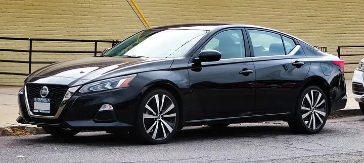
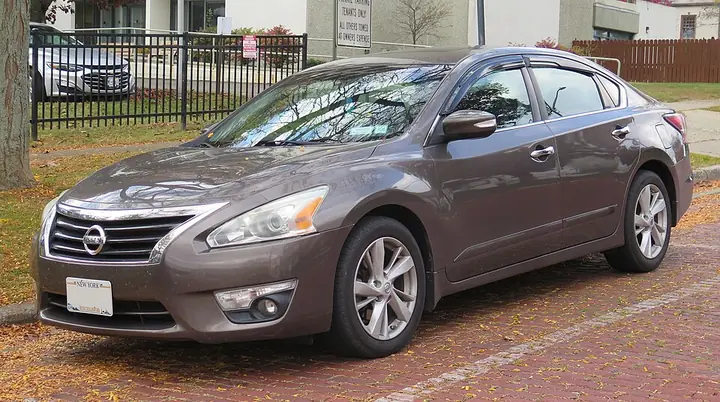
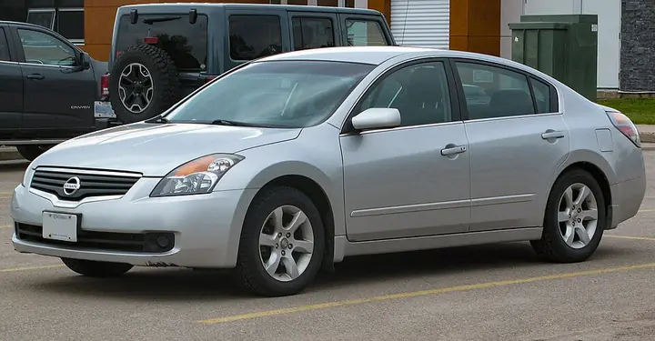
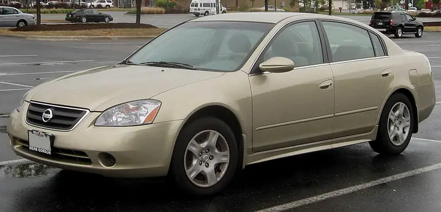
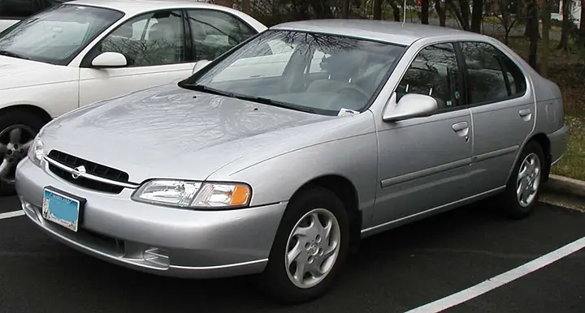
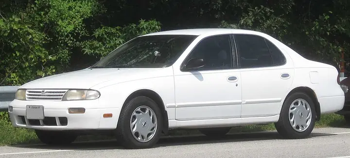

Nissan Altima
Sixth generation (L34; 2018) · 2018–present
Abstract
This generation of the Nissan Altima was built August 2018 – present in United States: Smyrna, Tennessee (Nissan Smyrna Assembly Plant, 2018–2020); Canton, Mississippi (Canton Vehicle Assembly Plant, 2018–present), China: Xiangyang (Dongfeng Nissan). Body styles: 4-door sedan. Layout: Front-engine, front-wheel-drive or all-wheel-drive. Designed by Teppei Kusunoki, Takashi Utsunomiya and Kenneth Lee.


1Specifications
| Production | August 2018 – present |
|---|---|
| Model years | 2019–present (US)2019–2025 (Canada)2019–present (China) |
| Assembly | United States: Smyrna, Tennessee (Nissan Smyrna Assembly Plant, 2018–2020); Canton, Mississippi (Canton Vehicle Assembly Plant, 2018–present)China: Xiangyang (Dongfeng Nissan) |
| Designer | Teppei Kusunoki, Takashi Utsunomiya and Kenneth Lee |
| Body style | 4-door sedan |
| Layout | Front-engine, front-wheel-drive or all-wheel-drive |
| Platform | Renault–Nissan D platform |
| Engine | Gasoline:2.0 L MR20DD I4 (China)2.0 L KR20DDET turbo I4 (2019–2024)2.5 L PR25DD I4 |
| Transmission | Jatco CVT8 Xtronic CVT |
| Wheelbase | 2825 mm |
| Length | 4901 mm4920 mm (Teana) |
| Width | 1850 mm |
| Height | 1447 mm |
| Weight | 1435–1575 kg |
| Also called | Nissan Teana (China, 2025–present) |
2Versions
- 2022 refresh (facelift)
- KR20DDET engine NHTSA investigation
3Previous generations





.jpg){kind=link}




4Generation by generation
Length +7% from the first to the last
U13 19924,585 mm
L30 19974,719 mm
L31 20014,884 mm
L32 20064,821 mm
L33 20124,859 mm
L34 20184,901 mm
Weight −0% from the first to the last
L32 20061,442 kg
L33 20121,430 kg
L34 20181,435 kg